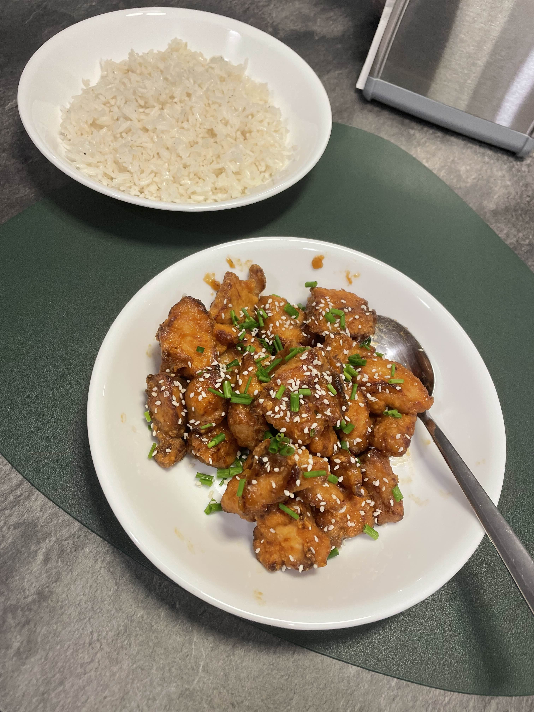

Andy's Honey Chicken Recipe

Description
For this recipe we will be making fried chicken covered in sweet and delicious sauce.
Alternatively you can follow along the video posted by Andy Cooks on YouTube, where the recipe is taken from.
Ingredients
For a serving size of 3 plates:
- 800 gr. diced chicken breast
- 3 tablespoons of soy sauce
- 2 tablespoons of Shaoxing cooking wine, or half of that of Mirin as a substitute
- 1 teaspoon of white pepper
- 1 egg white
- 4-5 cloves of garlic, finely grated
- 1 teaspoon of chicken bouillon
- 1 teaspoon of rice vinegar
- 3 tablespoons of honey
- 150 gr. cornflour (called cornstarch in the US)
- 150 gr. rice flour
- 1 tablespoon of baking powder
- A good amount of vegetable oil for frying
- Optional: spring onions and sesame seeds for serving
Steps
- Dice the chicken breast into small, 1-inch cubes.
- Create a marinate for the chicken with 2 tablespoons of soy sauce, 2 tablespoons of Shaoxing cooking wine (or the Mirin substitute), white pepper, and the egg white. Mix well, then add the diced chicken and coat evenly. Cover and refrigerate for an hour.
- Fill a wok or large frying pan half full with oil and heat to around 180°C (350°F) for deep frying.
- In a separate bowl from the marinade, mix together the cornflour, rice flour, and baking powder. Season with salt. Place some marinated chicken pieces into the flour mixture and coat well.
- Once the chicken is coated, carefully lower it into the hot oil and fry until golden brown and crispy, about 6 to 7 minutes. Remove from the oil and place onto a wire rack to drain.
- In a small bowl, mix together 1 tablespoon of light soy sauce, 4 tablespoons of hot water, grated garlic, chicken bouillon, rice vinegar, and honey. Stir well until everything is dissolved. This is going to be your sauce.
- Once the chicken is fried, remove the oil from the wok and place it back on the heat. If you didn't use a wok you can just do this in a separate medium to large saucepan. Add the sauce you just made and bring to a simmer.
- Once the sauce has been simmering for one to two minutes and is bubbling a bit, add the chicken back to the wok or saucepan and coat well in the honey sauce. Toss the chicken carefully to evenly coat in the sticky sauce.
- Place the chicken in your serving dish and garnish with some white sesame seeds and spring onions. Serve alongside white rice.